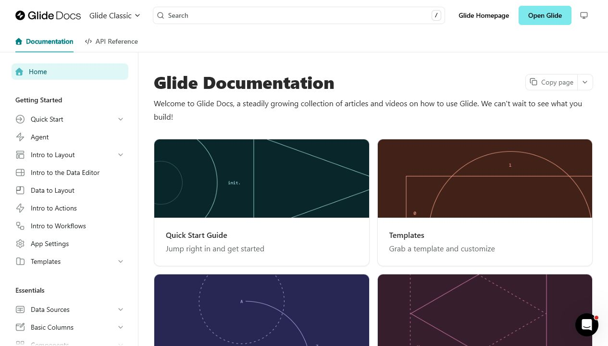
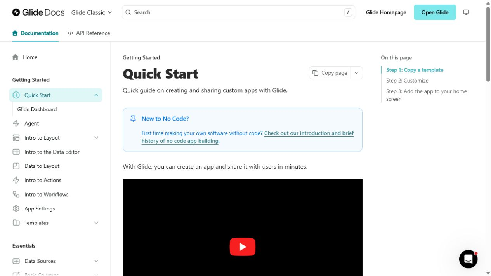
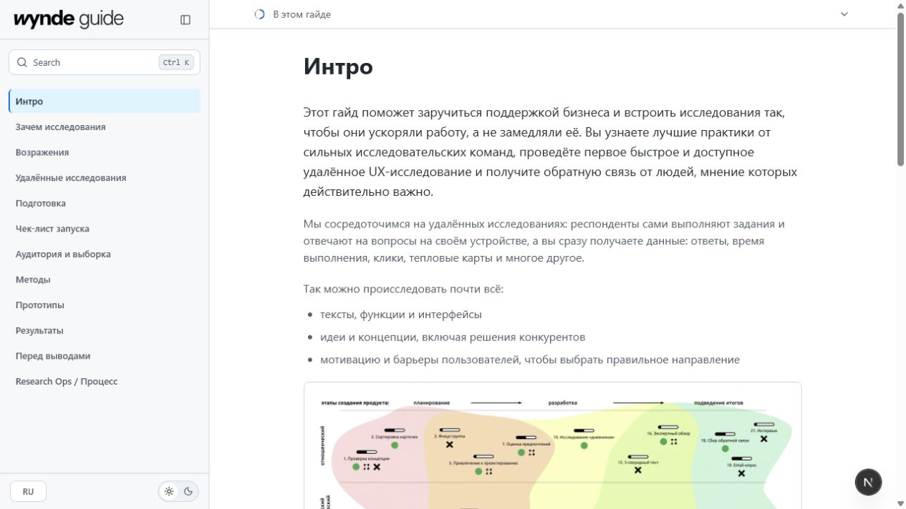
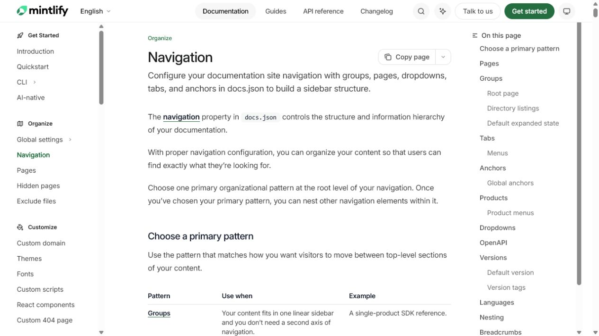
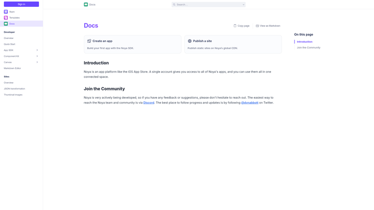

Стратегия UI и docs-инфраструктуры для Wynde Guide
10 июля 2026
Как сохранить точность Figma, но перестать вручную поддерживать всю инфраструктуру documentation site.
Почему текущий эксперимент выглядит странно
Docs builders, визуальный дизайн и headless infrastructure — разные слои. Текущий patch не мигрирует приложение на Fern, Mintlify или Fumadocs. Он сохраняет самописный GuideShell и добавляет поверх Figma-токенов второй, Primer-подобный visual layer. Поэтому точность снизилась, а поиск, навигация, ToC и client state всё равно остались собственными.
Что на самом деле делает Glide Docs
Production HTML Glide Docs показывает Fern generator metadata, Fern assets и Fern-specific selectors. При этом Glide добавляет собственный font, CSS, JavaScript, product theme, navbar и navigation behavior. Это Fern как инфраструктурный каркас плюс отдельная дизайн-реализация — не красивый default theme одним кликом.


Текущая база и зрелые docs-паттерны
У Wynde уже есть подходящий трёхколоночный shell и собственный визуальный язык. Зрелые docs-продукты подтверждают устойчивую структуру: сгруппированное дерево слева, читаемая статья, локальный ToC справа и поиск как отдельная interaction surface.




Сравнение архитектур
| Вариант | Figma fidelity | Экономия infra | Миграция | Вердикт |
|---|---|---|---|---|
| Fern целиком | Средняя без глубокой темы | Высокая | Высокая: MDX/docs.yml, hosting, i18n | Только при сознательной смене платформы |
| Полный fumadocs-ui | Средняя | Высокая | Средняя | Заменяет уже удачный visual layer |
| Fumadocs Core headless + Wynde UI | Высокая | Высокая в commodity-слое | Низкая/средняя, инкрементальная | Рекомендуется |
| Полностью custom | Максимальная | Низкая | Низкая сейчас, высокая со временем | Слишком много ручной docs-инфраструктуры |
Целевая архитектура
Localized Wynde content (RU / EN JSON)
│
▼
WyndeSourceAdapter / StaticSource
│
▼
Fumadocs Core
page tree · URLs · i18n · search
breadcrumbs · ToC data · metadata
│
▼
Next.js App Router shell
│
▼
Wynde UI layer
Figma tokens · sidebar · article blocks
mobile chrome · exact responsive states
│
▼
Small client interaction islands
Wynde/Figma владеют
- типографикой, цветом и spacing;
- desktop/mobile композицией;
- sidebar/search presentation и состояниями;
- callouts, tables, toggles, media и assets.
Docs core владеет
- каноническим page tree и URLs;
- locale-aware source;
- search index и query primitives;
- breadcrumbs, ToC data и route helpers.
Следующий шаг
Сейчас не устанавливать новый docs framework и не делать массовую миграцию. Сначала собрать один вертикальный prototype chapter: RU/EN, grouped sidebar, search, ToC, deep links, несколько rich blocks, desktop/mobile states, keyboard/focus и production build. В Fumadocs v16 нет отдельного headless sidebar component: Wynde navigation остаётся собственной и получает единое дерево данных из Core. Критерий успеха — сохранение Wynde fidelity при реальном удалении самописной инфраструктуры, а не только сходство первого экрана с Glide.